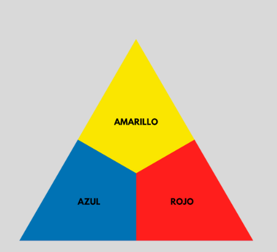

Primarios
Los colores primarios son el amarillo, azul y rojo. Estos colores forman la base del círculo cromático y se les denomina colores puros, ya que no pueden obtenerse mediante la mezcla de otros colores. Son esenciales porque, a partir de ellos, se originan las demás familias cromáticas.
